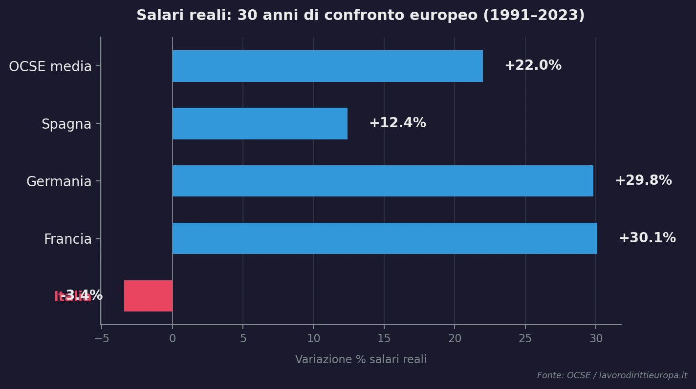
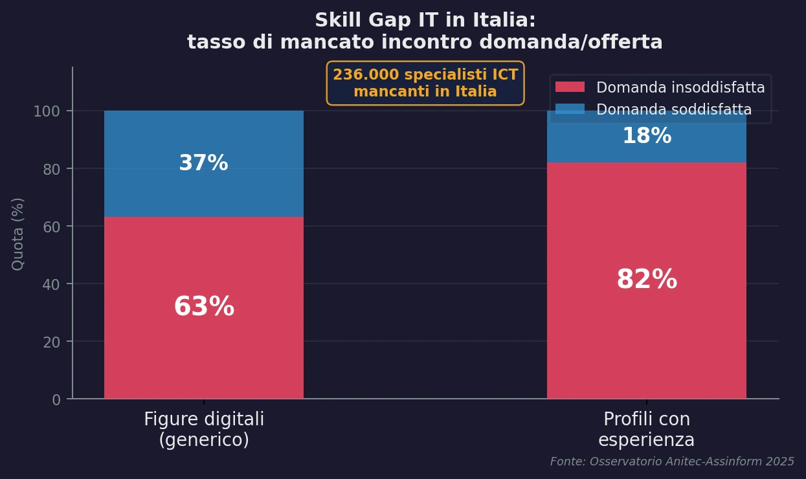
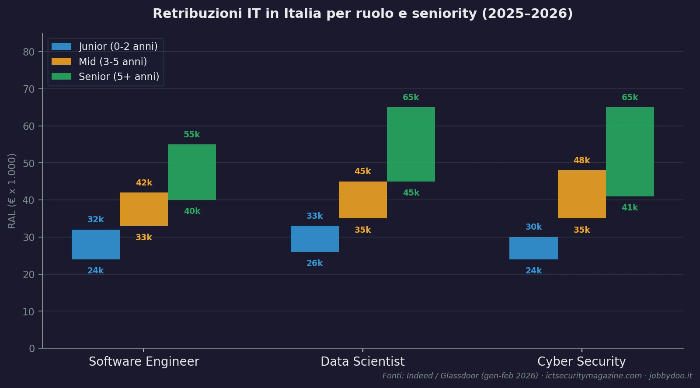

C'è una regola d'oro che seguo ogni volta che salgo in sella alla mia Yamaha XT1200Z: non passare mai dalla strada da cui sono arrivato. D'estate preferisco percorsi tortuosi, strade bianche sconosciute, rifugi isolati in quota. Nel lavoro, ho imparato a fare lo stesso. E guardando i dati sul mercato del lavoro italiano, capisco sempre più chiaramente perché restare sulla statale sia il rischio più grande che possiamo correre.
Come cantava David Bowie, ho deciso di essere il pilota, non il passeggero. Questo post racconta perché — con numeri alla mano.
Un Paese fermo al palo: l'inverno salariale italiano
Se hai la sensazione che il tuo stipendio valga sempre meno, non è un'impressione: è pura matematica. Tradotto in concreto: chi guadagnava 2.000€ netti al mese nel 2019 ne vale oggi circa 1.720€ in termini di potere d'acquisto reale. Mentre noi ci affanniamo, l'inflazione agisce come una tassa invisibile che erode silenziosamente le nostre conquiste, bonifico dopo bonifico.
Secondo i dati OCSE e l'ultimo Rapporto ISTAT, il quadro macroeconomico italiano è impietoso:

Variazione % dei salari reali 1991–2023. L'Italia è l'unico grande Paese europeo con segno negativo. Fonte: OCSE / lavorodirittieuropa.it
Mentre Francia e Germania costruivano potere d'acquisto, l'Italia lo erodeva. Il "posto fisso" che i nostri genitori vedevano come un traguardo oggi assomiglia spesso a una gabbia d'oro (e a volte, di latta), dove il potere d'acquisto viene eroso mese dopo mese.
A questo si aggiunge il divario dimensionale: a parità di ruolo, lavorare per una microimpresa significa spesso accettare una retribuzione inferiore del 20-30% rispetto a una grande azienda. RAL media nelle grandi imprese: oltre 39.000€. Nelle piccole: meno di 28.000€.
La mappa del terreno: quanto pagano davvero i diversi settori?
La RAL media è come la velocità media di un viaggio in moto: può dirti che hai percorso 300 km in 6 ore, ma non ti dice nulla della statale intasata o della strada bianca che ti ha regalato i panorami migliori. Per navigare davvero, dobbiamo guardare ai ruoli specifici.
🏦 Settore finanziario e bancario
La RAL media si attesta intorno ai 45.000–46.000€, ma è trainata verso l'alto dai quadri direttivi. Un consulente di filiale o un analista junior spesso parte da 26.000–28.000€ annui. Il titolo sul biglietto da visita suona bene; il bonifico mensile, meno.
📉 I settori in emorragia
Tra il 2019 e il 2025, i dipendenti base più colpiti dall'inflazione: Settore Pubblico (-15% di potere d'acquisto reale), Turismo e Commercio.
⚙️ La meccanica e il manifatturiero
Il settore dove sono cresciuto. Ha resistito meglio grazie agli adeguamenti IPCA: guardando le tabelle 2024-2025, operaio specializzato (C3) ~2.130€ lordi mensili, Quadro (A1) ~2.800€. Tuttavia, chi non abbraccia l'automazione e la Transizione 5.0 rischia di rimanere indietro: i reparti che integrano robotica collaborativa, IoT industriale e manutenzione predittiva crescono; quelli fermi iniziano a perdere commesse.
L'oasi nel deserto: il digitale, i ruoli che trainano e il lavoro da remoto
Nonostante la mia posizione solida nella meccanica, la mia indole da esploratore mi ha spinto a guardare oltre. Se voglio poter lavorare da dove voglio — magari da un borgo medievale o da una baita dopo un'escursione in MTB — il digitale è l'unica vera strada bianca che porta alla vetta.
Il settore IT è l'oasi in mezzo al deserto salariale italiano. E i numeri lo urlano a gran voce.
Le stime dell'Osservatorio Anitec-Assinform indicano che mancano circa 236.000 specialisti ICT in Italia. Il tasso di mancato incontro tra domanda e offerta tocca il 63% per le figure digitali generiche, e supera l'80% per i profili con esperienza. Quasi due aziende su tre non trovano il tecnico digitale che cercano. Nella logica di mercato, questa scarsità ha un effetto preciso: fa salire il prezzo. In questo caso, il tuo stipendio.

Tasso di mancato incontro domanda/offerta nel settore ICT. Fonte: Osservatorio Anitec-Assinform 2025
Molti credono che serva una laurea magistrale per entrare. Falso. Il 38% dei giovani in Italia lavora già senza laurea, e nel tech questa è quasi la prassi. I recruiter guardano il portfolio su GitHub. Tre o quattro progetti solidi, documentati bene e pubblicati, bastano spesso per superare il filtro di un recruiter tech — con o senza laurea.
Le retribuzioni ruolo per ruolo
Questa carenza cronica ribalta i rapporti di forza. Non parliamo di "informatici" generici, ma di specialisti con RAL ben definite (dati Indeed e Glassdoor, gen–feb 2026):

RAL per ruolo e seniority nel settore IT italiano (2025–2026). Fonti: Indeed – Software Engineer · Glassdoor – Data Scientist · ICT Security Magazine
Lavorare 100% da remoto dall'Italia per aziende tech estere (USA, Svizzera, Germania, UK) permette di accedere a salari che superano dell'80-100% queste medie italiane. Svincoli finalmente il tuo valore dal costo della vita locale.
Dal metallo al codice: l'arte del "Montatore Software"
Purtroppo, o per fortuna, nel mondo dello sviluppo software professionale ho solo 6 mesi di esperienza lavorativa ufficiale. Ho visto ancora poco delle dinamiche interne di una vera software house — e lo dico senza pudore, perché la trasparenza vale più di qualsiasi bluff ben costruito su LinkedIn.
Eppure non parto da zero. Ho portato con me la disciplina dell'officina. Un montatore meccanico sa che se un pezzo non è in asse, l'intera macchina vibra e prima o poi cede. Questo mindset l'ho applicato allo studio. Ho divorato C#, SQL, HTML, CSS e i principali design pattern architetturali.
Ho già sviluppato due app in .NET MAUI in continuo aggiornamento:
- .NET MAUI App finanza personale → Perché se non misuri l'inflazione sui tuoi risparmi, non puoi sconfiggerla.
- .NET MAUI App tool per l'officina → Calcoli, tabelle e conversioni che prima rubavano tempo prezioso e ora costano un tap. Creata per risolvere ostacoli reali che tocco con mano ogni giorno sul campo.
Cambiare strada, studiare la sera dopo il turno in officina, proporsi in un settore nuovo puntando sui propri progetti personali... fa paura? Certo. È come imboccare una mulattiera sconosciuta con una moto da 260 chili. Ma è l'unico modo per scoprire scenari che dalla statale non vedrai mai.
Tre spunti operativi per chi vuole uscire dalla trappola salariale
Prima di chiudere, voglio lasciarti tre spunti concreti, figli delle mie ricerche e della mia esperienza sul campo:
- Il tuo passato ha un valore inestimabile Non stai buttando via gli anni trascorsi in altri settori. Le aziende tech cercano competenze "ibride". Un solido background nella meccanica — o in qualunque settore — unito allo sviluppo software ti rende un candidato unico: sei in grado di capire i problemi reali del business e tradurli in codice.
- Mostrate, non raccontate Diploma o laurea non sono requisiti strettamente necessari. Quello che fa la differenza è il tuo portfolio. Metti il codice online, rendilo open source su GitHub e dimostra di saper creare soluzioni funzionanti.
- Imparate a imparare Il mercato IT muta alla velocità della luce. La vera skill che ti assicurerà longevità e crescita salariale non è conoscere un framework a memoria, ma la learning agility. Il metodo più efficace? Costruire qualcosa di reale mentre si studia. Non tutorial infiniti: un progetto concreto che risolve un problema vero. La frustrazione di debuggare il primo errore insegna più di cento ore di video.
L'inflazione, la stagnazione salariale e la rigidità del mercato del lavoro italiano sono il traffico rovente in cui siamo bloccati tutti i giorni. Le tue competenze, la disciplina e la voglia di sporcarti le mani con le nuove tecnologie sono la tua moto da fuoristrada.
Stai percorrendo un cammino simile, o stai valutando la transizione verso il digitale? Scrivimi, mi farebbe piacere confrontarmi con la tua storia.
- Email: doppiam1@gmail.com — per messaggi più articolati, collaborazioni o per raccontarmi la tua storia
- LinkedIn: Marco Morello — per restare in contatto e seguire il percorso